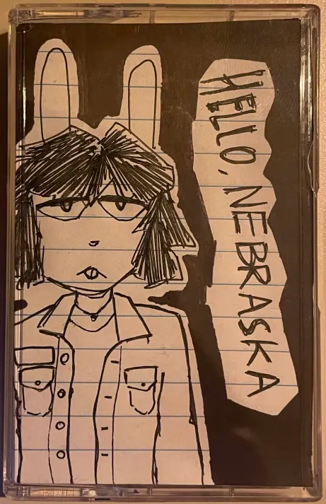

5.27.2025 ► HELLO, NEBRASKA, HOW HAVE YOU BEEN?

HELLO, NEBRASKA ► Recorded April/May 2025
TRACKLIST ► A1. Hello, Nebraska / A2. Vague As Always / A3. How To Hold Onto Everything / A4. Dog Dance / B1. When The Sky Turned Green
/ B2. Love Hurts / B3. When / B4. In Heaven / B5. Bye, Me
Hello, Nebraska is a tape i recorded in a few days. the tracks (most will likely never see the light of day)
were recorded directly from a board and mic setup with little post processing.
overdubs were done for minimal lead and bass parts on most tracks. it was really fun to
experiment with a stripped down sound, some of the songs would make great acoustic pieces. my
song dog dance also got a treatment in this style on the tape.
thematically the tape is mostly me singing about my life (boring) with loose themes of a tornado. if i remember correctly
we had a "tornado scare" the day i started working on it.
there isn't particularly much else to say about this project except that out of everything
i've made in the last five (?) years of making music this one's probably my favorite.